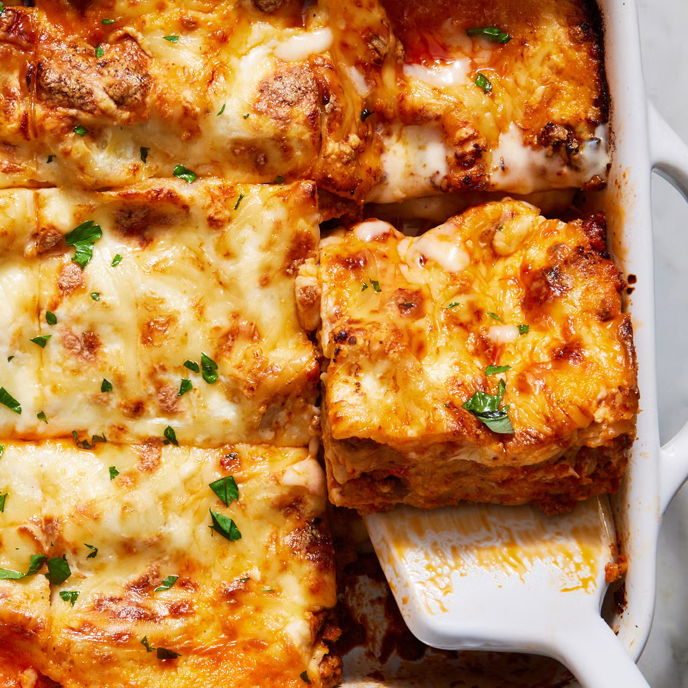

Lasagna
Lasagna alla Bolognese is an easy, weeknight-style Italian dish made with layers of beef-pork Bolognese, creamy béchamel, no-boil noodles, and mozzarella-Parmesan cheese.
85 min
Alejandro Valdes Lora
Ingredients in this Lasagna Recipe
- Extra-Virgin Olive Oil:One teaspoon, used to sauté ingredients, enhancing the meat’s natural flavors and adding a subtle, rich aroma.
- Ground Beef: 1 lb (90% lean), adds rich, hearty flavor and protein to the sauce.
- Ground Pork: 1 lb, provides additional flavor and tender texture.
- Tomato Paste: 3 Tbsp, intensifies tomato flavor and adds depth.
- Marinara Sauce: 2 (32-oz.) jars, forms the main body of the sauce and keeps the lasagna moist.
- Kosher Salt: 2 tsp, used to season the sauce and balance flavors.
- Whole Milk: 4 cups, forms the creamy base of the béchamel.
- Unsalted Butter: ½ cup (1 stick), adds richness and smooth texture.
- All-Purpose Flour: ½ cup, thickens the béchamel to coat the layers of lasagna.
- Ground Nutmeg: ¼ tsp, adds subtle warmth and complexity.
- Kosher Salt: 2 tsp, seasons the béchamel for balanced flavor.
- Black Pepper: ½ tsp freshly ground, adds mild heat and enhances taste.
- Lasagna Noodles: 15 no-boil noodles (about 9 oz.), forms the layers of the lasagna.
- Mozzarella: 1 lb whole-milk, shredded; provides melty, creamy texture.
- Parmesan: 3 cups finely grated (about 7 oz.), adds sharp, salty flavor and a golden topping.
- Cooking Spray: Used to grease the baking dish and prevent sticking.
- Chopped Fresh Parsley: For serving, adds color and fresh flavor as garnish.